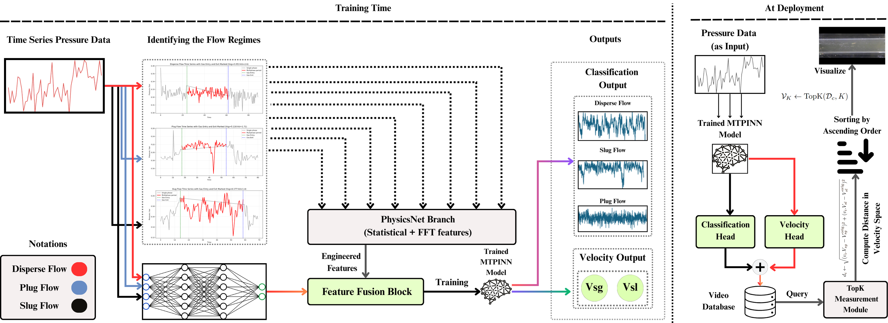

Project 04 / Applied AI & Physics-Informed Learning | QU and HBKU Research Project
Tracer
Physics-guided multiphase flow metering and regime identification using multi-task learning and condition-aware visualization.
Developed a framework that analyzes pressure measurements to identify gas–liquid flow regimes, estimate gas and liquid superficial velocities, and retrieve matching flow videos for visual interpretation. The system integrates temporal learning, spectral features, and physical consistency constraints.
View source on GitHub ↗
Overview
Recognizing flow patterns and measuring phase velocities are essential for monitoring pipelines and multiphase processes. Conventional approaches can depend on intrusive instrumentation, while purely data-driven models may return predictions that conflict with the underlying flow physics.
Tracer combines sensor-based learning with physical constraints. Rather than building separate systems for classification and metering, one model learns both tasks from pressure-signal characteristics. Its estimated operating conditions also provide a way to retrieve visually comparable flow states from a video library.
Results at a glance
Metrics follow the public repository README. The cross-validation average and held-out best-fold figures describe different evaluation summaries and should not be treated as interchangeable.
System workflow
- Pressure acquisitionCollect temporal pressure measurements from the flow system.
- Feature extractionCombine temporal patterns with FFT-based spectral and statistical descriptors.
- Multi-task inferenceClassify flow regime and regress gas and liquid superficial velocities.
- Physics guidanceUse momentum-related and mass-conservation residuals during training.
- Visual retrievalMatch predicted operating conditions against a library of flow videos.
Model architecture
The model brings together two complementary representations of the pressure data: a temporal encoder for time-dependent behavior and a feature branch for derived statistical and frequency-domain information. Their learned representation feeds multiple prediction heads.
Temporal encoder
A temporal convolutional network (TCN) learns patterns in pressure-signal sequences associated with different flow states.
Spectral feature branch
FFT-derived features and summary statistics provide complementary information about pressure fluctuations and their dominant frequencies.
Classification head
Predicts one of three flow regimes: dispersed flow, plug flow, or slug flow.
Regression heads
Estimate gas superficial velocity (Vsg) and liquid superficial velocity (Vsl) from the shared representation.
Physics-informed learning
In addition to supervised classification and regression objectives, the training procedure uses a drift-flux / Darcy–Weisbach-based physics residual and a steady incompressible mass-conservation residual. These encourage predicted operating conditions to remain consistent with the flow model.
The combined objective covers five loss components: flow regime classification, gas velocity regression, liquid velocity regression, momentum-related physics consistency, and mass conservation. Homoscedastic uncertainty weighting learns how these terms contribute during training instead of assigning every objective a fixed manual weight.
Conceptual expression; the full implementation, including weighting and residual definitions, is available in the code repository.
Experimental evaluation
The repository reports leakage-aware, file-grouped five-fold cross-validation and a held-out classification report for a selected best-fold model. The three flow regimes were evaluated using per-class precision, recall, and F1-score.
| Flow regime | Precision | Recall | F1-score | Samples |
|---|---|---|---|---|
| Dispersed | 1.0000 | 1.0000 | 1.0000 | 18 |
| Plug | 0.8947 | 0.8947 | 0.8947 | 19 |
| Slug | 0.8947 | 0.8947 | 0.8947 | 19 |
| Weighted average | 0.9286 | 0.9286 | 0.9286 | 56 |
All 18 dispersed-flow examples in this held-out split were correctly classified. Plug and slug flows had lower, matching per-class F1-scores, indicating that distinguishing these two regimes remained the more difficult classification task in this evaluation.
Condition-aware visual retrieval
Tracer extends numerical predictions with a visualization layer. Predicted superficial velocities describe the inferred operating condition; the retrieval module uses these conditions to identify relevant videos in an existing flow library.
The repository reports 76.43% Top-1 retrieval performance for its real-time retrieval system. By connecting sensor measurements, inferred flow behavior, and visual references, this module provides a way to inspect the model's output beyond a class label alone.
Implementation
The public Python codebase separates feature engineering, grouped data splitting, temporal modeling, physical losses, training and evaluation, baseline ablations, and visual retrieval into dedicated modules.
Learning pipeline
Temporal convolutional encoder, multi-task prediction heads, and uncertainty-weighted objectives.
Validation
GroupKFold orchestration, held-out evaluation, regression metrics, and classical machine-learning baseline experiments.
Retrieval module
Video-library metadata, candidate matching, and video display/player utilities.
Research significance
This project investigates how physical constraints can be integrated with temporal and spectral learning to infer multiple aspects of a flow state from pressure measurements. Its multi-task formulation links discrete regime identification with continuous flow metering, while the retrieval component connects predicted operating conditions with visual examples.
The current evaluation supports the approach on the reported experimental data. Testing across additional facilities, sensor configurations, and operating conditions would be valuable for establishing broader deployment generalization.
Repository
Explore the implementation, evaluation outputs, and visual retrieval components in the public source repository.
Explore Tracer on GitHub ↗